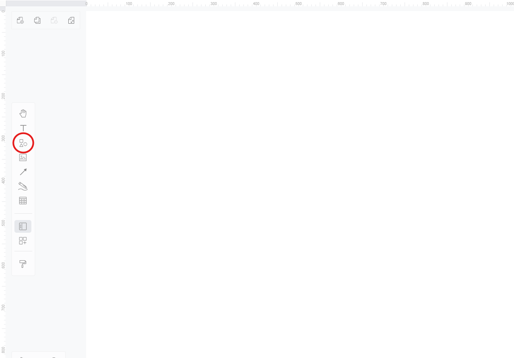
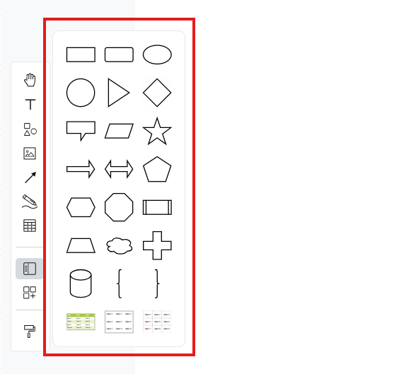
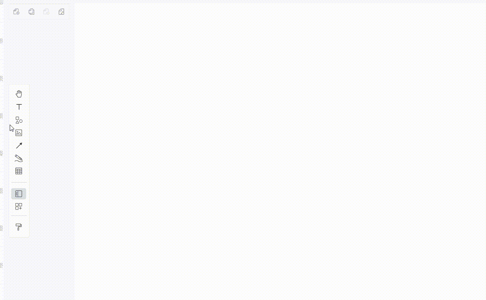
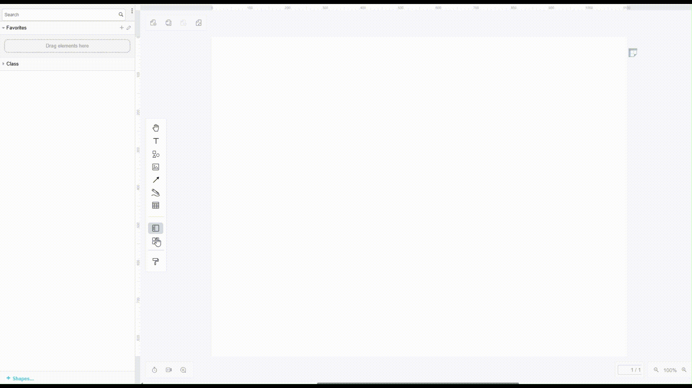
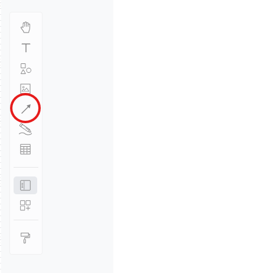
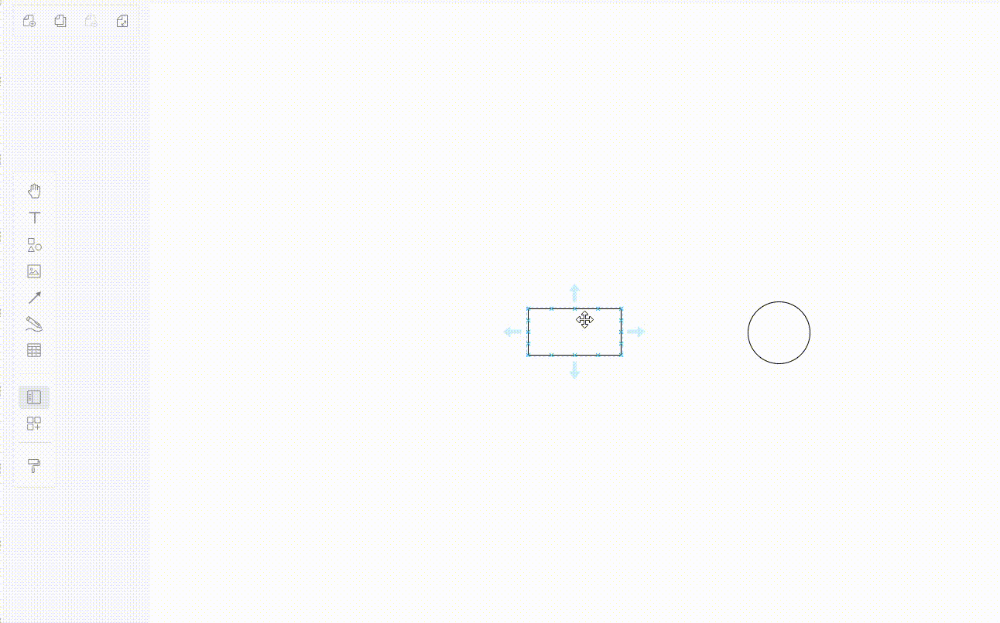

Creating Shapes and Lines
Overview
In this section, we will guide you through the process of adding shapes and lines to your diagram in Visual Paradigm Online. This guide assumes you are already on a blank diagram page, ready to create your visual representation.
Adding Shapes
-
Click on the "Shapes" Icon located on the left toolbar.

This icon opens a menu containing various shapes that you can use in your diagram, allowing for a diverse range of visual elements.
-
Select a Shape from the Menu.
Tip
Explore different shapes to find the ones that best fit your diagram needs. Common shapes include rectangles for processes, circles for events, and arrows for directional flow, each serving distinct purposes in your diagram.

-
Drag the Selected Shape onto the Canvas.
You can drag multiple shapes by holding the Ctrl key while selecting.
Info
You can reposition the shape by clicking and dragging it to your desired location on the canvas. This flexibility allows you to arrange your diagram intuitively, ensuring a logical flow of information.

-
Customize the Shape using the menu at the top to change its colour, size, and style.
Note
Use the top menu to adjust the colour and style of your shapes. Customizing shapes not only enhances visual appeal, but also helps differentiate between various elements to make your diagram easier to interpret.
Accessing More Icons and Shapes
-
Click on the "More Shapes" Icon: This icon, represented by a shapes symbol with a plus sign, is located on the left toolbar.
-
Explore the Library: A library of different shapes and icons will open. Each set of shapes belongs to a specific package.
-
Select a Package: Click the checkbox next to the package you want to add.
-
Apply Your Selection: Hit "Apply" to add the selected package to the left-hand sidebar.
-
Use the New Shapes: Open the package from the sidebar and drag the shapes or icons to your canvas.

Connecting Shapes with Lines
-
Click on the "Line" Tool from the left toolbar.

This tool allows you to create connections between different shapes, illustrating relationships or flows in your diagram, which is essential for conveying complex information clearly.
-
Select a Type of Line from the Options that appear.

You can choose from various line styles.
-
Option 1: Click and Drag from the "Line" Tool to manually create a connection between two shapes. You can drag multiple lines by holding the Ctrl key while selecting.
-
Drag the line from the toolbar and position it between the two shapes.
-
Adjust the endpoints of the line by dragging them to connect to the desired shapes.
Success
A line will appear connecting the two shapes, indicating a successful connection. This method is ideal for quickly linking shapes together, enhancing the flow of your diagram.
-
Option 2: Click on an Existing Shape on the canvas. A set of arrows will automatically appear around the shape.
-
Click on these Arrows to easily connect shapes.
Info
This method provides a quick way to establish connections without needing to select the line tool each time, streamlining your workflow. Simply click on the arrows to create connections between shapes effortlessly.

-
Customize the Line using the menu at the top to change its appearance.
Tip
Use the top menu to adjust the style, thickness, and direction of your lines. Customizing lines can enhance the clarity of your diagram and help convey the intended message more effectively, ensuring that your audience understands the relationships between elements.
Conclusion
Now that you have added shapes and lines, you can proceed to customize them further or continue building your diagram. For instructions on how to save your work, this guide will show you the steps to download a PDF of your diagram.